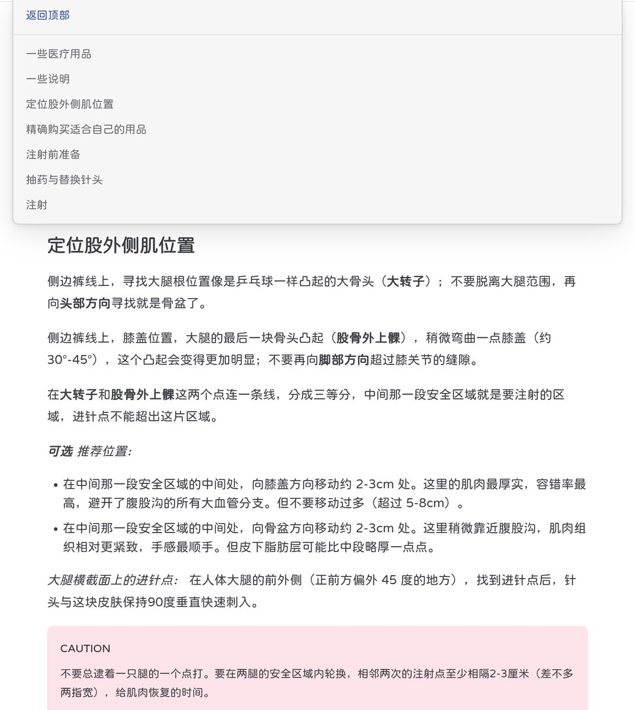

𝘠𝘶𝘮𝘦𝘬𝘢 ✨🐰
@YMKxxxxxxxx
@lainoffial36641 看看窝的

𝘠𝘶𝘮𝘦𝘬𝘢 ✨🐰
@YMKxxxxxxxx
专门给MtF姐妹们写的肌肉注射教程，汇报一下进度～
这几天用上课的时间把第一版写完了，内容很详细，包括很多章节，如果有错误和遗漏还请小伙伴们多多批评指正。
网站目前看起来有点简陋，不过肯定会积极维护和更新的，小伙伴们放心好啦，爱你们～
传送门：https://t.co/MXCle32KNC
#MtF #HRT #trans https://t.co/esRmRlQavl https://t.co/6eOzIcFbss
河野樱^（二代目）
@lainoffial36641
写了一份教学喵…为同类和自己扎都可以的不过需要练习克服恐惧心😺😺 https://t.co/RfVfWfJpp6